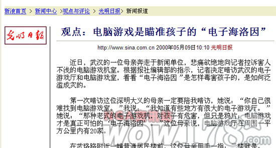
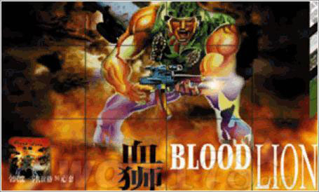

玩游戏的孩子，"男的都变小偷，女的都变三陪小姐".
对很多人来说，中国的网络游戏产业或者说中国的游戏产业究竟从哪一年开始算没有一个标准，但对一个曾经历过中国游戏低谷的老玩家来说，有一件印象深刻的事可以作为标记.
2000年5月9日，光明日报一个叫夏斐的记者发表一篇<电脑游戏是瞄准孩子的电子海洛因>文章，文章中称，他在一夜之间学会了<星际争霸>和<英雄无敌3>两款游戏，并且在第二天无敌与网吧，击败了许多对手，由此获得了网吧里孩子们以及网吧老板的信任，才得到了他想得到的信息.按文章所说，该网吧老板曾对他说：玩游戏的孩子，"男的都变小偷，女的都变三陪小姐".
2000年的报道

现在10年已经过去，我这个玩过10年游戏的人依然没变成小偷，我们都知道这篇文章是在胡说八道.首先就他一夜之间学会的那两款游戏，任何一款也不是几天就能搞熟悉的，更不用说在网吧里称王了.其次我们都知道任何一个网吧老板也不会说出最后那种总结性的话.作者或许是真的去看了看那两款游戏，也的确去了个黑网吧见了几个孩子，然后就按照自己的意愿编造了这篇报道.
无论在当时还是现在，这都是篇荒唐透顶的文章，但如果大家在网上搜索一下该作者，就会看到：
2001年8月，《电脑游戏：瞄准孩子的“电子海洛因”》获第11届中国新闻奖（2000年度）通讯二等奖。这篇文章作为范文被选入人民大学高校统编教材“世纪新闻传播学系列教材”——《新闻写作教程》，编者给予高度评价。
2003年7月夏雨田系列报道获第13届中国新闻奖。作品《告别南极，不带走滴水片石》被收录进“九年义务教育六年制小学《语文》教科书”第十二册。
2003年9月被评为高级记者，是目前光明日报社最年轻的高级记者。
2004年2月被报社编委会提升为副局级站长。
看到了吧？这篇谎话连篇的报道偏偏就获得了新闻奖二等奖，而且该作者还能够去南极站做考察报道，后来还越走越高.可以这样说，他踩着游戏的尸体与玩家的血泪在事业上青云直上，并且还给游戏留下一个"电子毒品"的称呼.这个称呼今天的我们已经很熟悉了，因为不断有各种各样的骗子跳出来要做所谓新一代的"林则徐".不同的是林则徐真的是为国为民，而这批人则是借机会大笔圈钱.
记者夏斐
总的来说，从2000年5月9日到2010年5月9日，已经过了整整10年，变化的是游戏市场琳琅满目了，没变的是游戏与玩家的社会地位.
对于一个纯粹的玩家来说，在看到各种无中生有的对游戏妖魔化的报道后，都会有一种满腔怒火无出发泄的感觉.因为事情明明不是这样，却被那些曾一度比自己看做很权威很神圣的主流媒体一遍遍在报纸于电视上恶毒的歪曲，却没有自己去辩解的机会.
现在我们都知道那是因为我们没有话语权.
话语权又分为话语权利与话语权力，我想这大家一看就明白其中大概，但不用太多去琢磨，因为这两个东西我们都没有.没有话语权，玩家在游戏立场上做任何抗争都是徒劳的，并且还容易落人以口实，因为玩家越替游戏辩驳，就越做实了中毒深的罪名.你若以死相抗，那就是<一玩家因过渡沉迷游戏而自杀身亡>等等报导的大轰炸.中国因为西方主导了话语权因此在世界舆论中屡屡吃亏，但中国大众对话语权这方面的感性认识远没有中国玩家早也没有中国玩家深(具体的情况我们在后面可以继续谈到).
幸好在2000年时还没发生有玩家死亡的事.不过当时中国游戏已经落入了低谷.比如说(老一点的玩家可能知道)，著名的国内游戏开发公司，尚洋，在那一年倒闭了.

昨日之歌注：我至今清晰地记得自己在各家游戏杂志封面上看见：“血狮，保卫中国！”这样热血沸腾的宣传语时的激动心情。
今天的玩家根本不可能知道尚洋是什么，他们如果用的是拼音输入，可能一部分人连"商鞅"都不知道.即便自诩为老玩家的我本人，对尚洋的认识也只停留在一款名为<血狮>的单机游戏，这款烂到极点的游戏被我们的媒体宣传为中国的<命令于征服>----虽然在当时来说做得烂并不怪他们.你们看，10年前我们的游戏媒体就是这种作风，现在依然如此.